人物背景
青叶城西高中
宫城县内高校里面排球实力4强的私立高校，大多数排球部成员都擅长独立思考，并且能够做到冷静而又快速地找出面前难题的解决方法。
排球理念是“无论前面有多困难，都不要放弃自己和其他队员之间的沟通和思考。”
担任排球部队长的是曾获宫城县内中学排球大会“最佳二传手”的及川彻，队内王牌由及川彻的儿时玩伴岩泉一担任。
全国中学排球大赛宫城县预选赛夺冠热门——北川第一中学排球队的多数成员都进了该高校。
沟口 贞幸（みぞぐち さだゆき）。青叶城西高中排球社领队
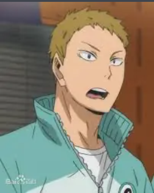
入畑 伸照（いりはた のぶてる）。青叶城西高中排球社教练
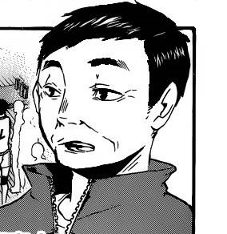
青叶城西高中一年级生：金田一勇太郎、国见英
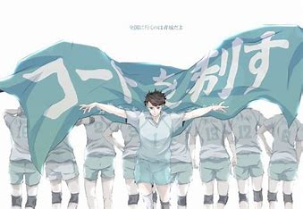
金田一勇太郎（金田一勇太郎（きんだいち ゆうたろう）。青叶城西高中一年级拦网员，北川第一中学出身，尊敬学长，初中时不喜欢影山飞雄。
在及川的举球下能发挥出“原始的最高打点”，高度甚至可以超越日向。
对于影山的“王子般”的独裁和托球方式非常不满。因为发型像韭菜所以被田中他们叫做“韭菜头”。
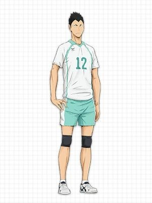
国见英（国见英（くにみ あきら）。与金田一同属北川第一中学出身，讨厌不经大脑的努力，和无缘无故的浪费体力，因此在北川第一时和影山非常不对盘。但及川却利用国见这样“高效率、低燃费”的特性，使他成为对乌野之战中三局下半的主要攻击手。
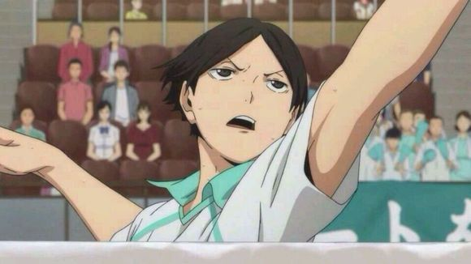
青叶城西高中二年级生：矢巾秀、渡亲治、京谷贤太郎
矢巾秀（矢巾秀（やはば しげる）。性格散漫，但对学长十分尊敬
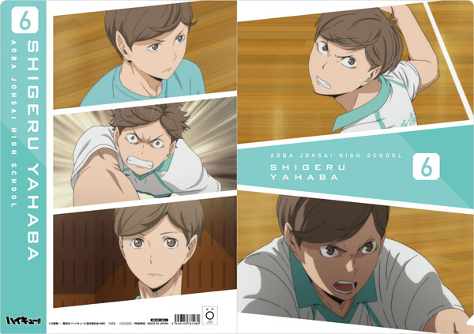
渡亲治（渡亲 治（わたり しんじ）.一个能够举球的自由球员，原二传，能在及川不能举球时，将球举给其他队友发动攻击。
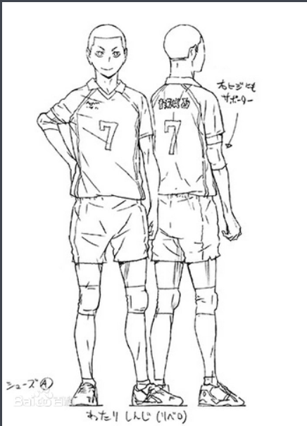
京谷贤太郎（京谷贤 太郎（きょうや けんたろう））。国中是南三中出身，天才型的主攻手。也因为其实力很强的关系，对前辈们讲话的口气大多都很冲，使他与上一届的三年级（及川与岩泉的前一届）关系很紧张，其他二年级（当时的一年级）也对他敬而远之。从那之后，他就不来社团了。及川称他为“小狂犬”，狂犬在日文中与京贤发音相同。就差点惹火现任的三年级(除了及川以外)。对及川有本能上的警戒，不理睬及川，却因为各种比赛都输给了岩泉而很尊敬他。
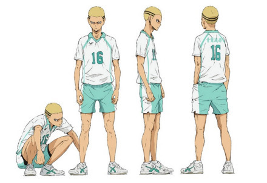
青叶城西高中三年级生：及川彻、岩泉一、花卷贵大、松川一静
及川彻（おいかわ とおる）。是宫城县NO.1的二传手，影山初中时期的前辈。教影山发球的师父。在对乌野的练习赛中登场，展现了力量与控球两种技巧结合的发球。有球感而且很努力，对于影山飞雄与生俱来的天赋很是羡慕，但从不认为自己会输，在女生中人气很高。
中学3年级时在宫城县市民体育大会排球竞技男子赛中得到最佳二传手奖。
在北川第一中学时对抗白鸟泽初中而屈居第二﹐希望可以一雪前耻。
与岩泉一为儿时同伴，彼此有超乎寻常的信赖关系，昵称对方为岩酱。
牛岛若利对他的评价是：“能让队友发挥出100%实力的名符其实的二传手”。
日向曾替他取了“大王者”（“王者”的学长=大王者）的称号，但及川本人似乎不知情。
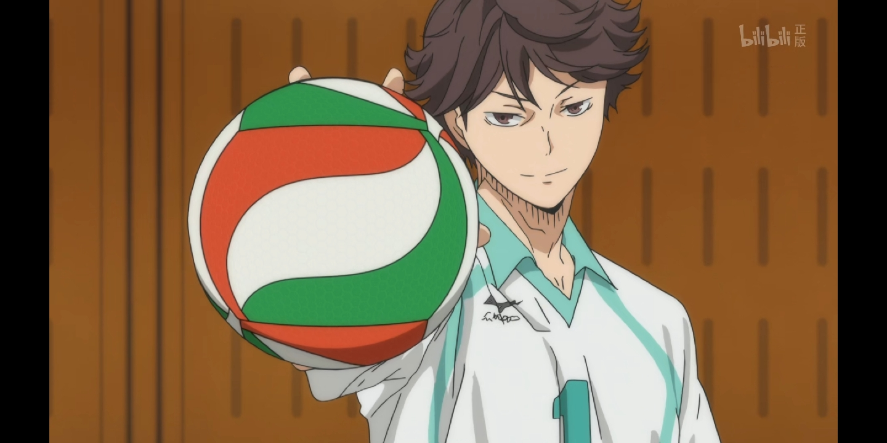
岩泉 一（いわいずみ はじめ。与及川彻为儿时玩伴，总是毫无预告地出手打及川彻，总能看穿及川彻的心理，彼此有超乎寻常的信赖关系。
青叶城西高中三年级，排球社副主将，担任主攻手。
力量型的攻击手，IH预选赛对乌野之战后半被称为“青叶城西的王牌”。
与及川从国小的俱乐部球队就一起打球，比任何人都理解及川，也是让及川理解到“六个人”的重要性的人。
有着很强抗压性，能靠自己把队伍从崩溃边缘拉回来。
在及川犯蠢的时候，会使用头锤跟排球来教训他。
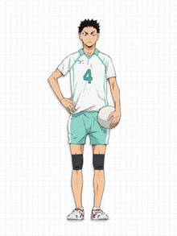
花巻贵大（はなまき たかひろ）。有着红棕色的短发。
被及川称为「小卷（マッキー）」﹐会和松川一起吐槽及川彻。身材高大，有着黑色微卷的头发。
当他与花卷、及川三人一起站在前排时会给对手很大的压迫感。
在IH对乌野之战中第二局后半，曾被月岛的假动作搞的很火大。
会和花卷一起吐槽及川。
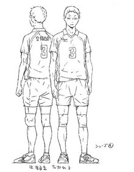
松川 一静（まつかわ いっせい）。身材高大，有着黑色微卷的头发。
当他与花卷、及川三人一起站在前排时会给对手很大的压迫感。
在IH对乌野之战中第二局后半，曾被月岛的假动作搞的很火大。
会和花卷一起吐槽及川。
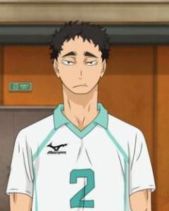